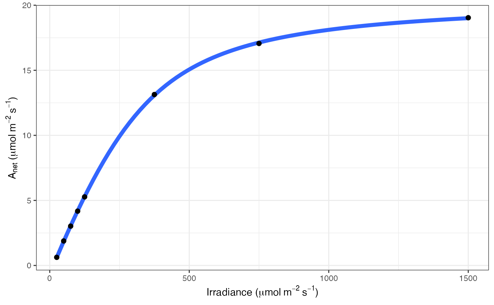

Fitting light response curves
Joseph R. Stinziano and Christopher D. Muir
2022-11-08
Source:vignettes/light-response.Rmd
light-response.RmdThis package currently only implements the Marshall et al. 1980 non-rectangular hyperbola model of the photosynthetic light response.
library(dplyr)
library(photosynthesis)
# Read in your data
dat = system.file("extdata", "A_Ci_Q_data_1.csv", package = "photosynthesis") |>
read.csv() |>
# Set grouping variable
mutate(group = round(CO2_s, digits = 0)) |>
# For this example, round sequentially due to CO2_s setpoints
mutate(group = as.factor(round(group, digits = -1))) |>
rename(A_net = A, PPFD = Qin)
# To fit one AQ curve
fit = fit_aq_response(filter(dat, group == 600))
# Print model summary
summary(fit[[1]])##
## Formula: A_net ~ aq_response(k_sat, phi_J, Q_abs = data$Q_abs, theta_J) -
## Rd
##
## Parameters:
## Estimate Std. Error t value Pr(>|t|)
## k_sat 21.167200 0.158332 133.69 1.88e-08 ***
## phi_J.Q_abs 0.051907 0.001055 49.18 1.02e-06 ***
## theta_J 0.775484 0.014920 51.98 8.20e-07 ***
## Rd.(Intercept) 0.668495 0.065235 10.25 0.000511 ***
## ---
## Signif. codes: 0 '***' 0.001 '**' 0.01 '*' 0.05 '.' 0.1 ' ' 1
##
## Residual standard error: 0.05535 on 4 degrees of freedom
##
## Number of iterations to convergence: 5
## Achieved convergence tolerance: 1.49e-08
# Print fitted parameters
fit[[2]]## A_sat phi_J theta_J Rd LCP resid_SSs
## k_sat 21.1672 0.05190746 0.7754836 0.6684953 12.97289 0.01225491
# Print graph
fit[[3]]
# Fit many curves
fits = fit_many(
data = dat,
funct = fit_aq_response,
group = "group",
progress = FALSE
)
# Look at model summary for a given fit
# First set of double parentheses selects an individual group value
# Second set selects an element of the sublist
summary(fits[[3]][[1]])##
## Formula: A_net ~ aq_response(k_sat, phi_J, Q_abs = data$Q_abs, theta_J) -
## Rd
##
## Parameters:
## Estimate Std. Error t value Pr(>|t|)
## k_sat 7.347423 0.141931 51.768 8.33e-07 ***
## phi_J.Q_abs 0.027192 0.001511 17.994 5.61e-05 ***
## theta_J 0.837778 0.030608 27.371 1.06e-05 ***
## Rd.(Intercept) 0.615283 0.086994 7.073 0.00211 **
## ---
## Signif. codes: 0 '***' 0.001 '**' 0.01 '*' 0.05 '.' 0.1 ' ' 1
##
## Residual standard error: 0.06799 on 4 degrees of freedom
##
## Number of iterations to convergence: 4
## Achieved convergence tolerance: 1.49e-08
# Print the parameters
fits[[2]][[2]]## A_sat phi_J theta_J Rd LCP resid_SSs
## k_sat 2.637157 0.01458002 0.8858892 0.5951635 42.17813 0.02446394
# Print the graph
fits[[3]][[3]]
#Compile graphs into a list for plotting
fits_graphs = compile_data(fits, list_element = 3)
# Print graphs to jpeg
# print_graphs(data = fits_graphs, path = tempdir(), output_type = "jpeg")
#Compile parameters into data.frame for analysis
fits_pars = compile_data(fits, output_type = "dataframe", list_element = 2)